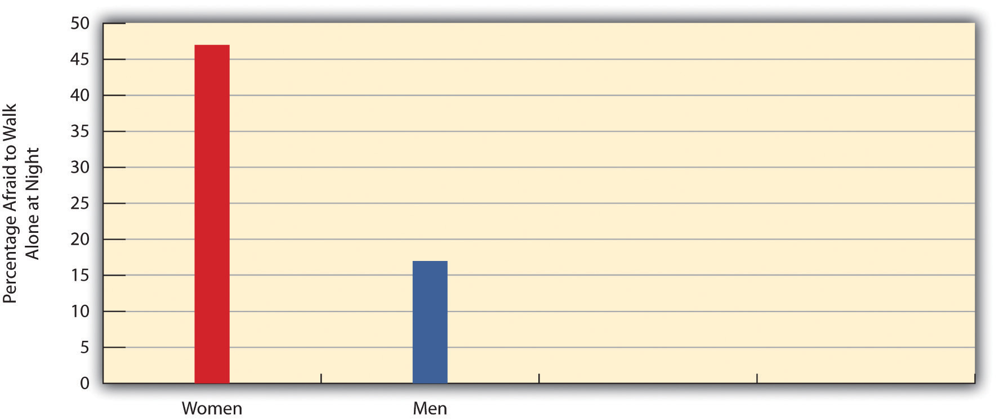
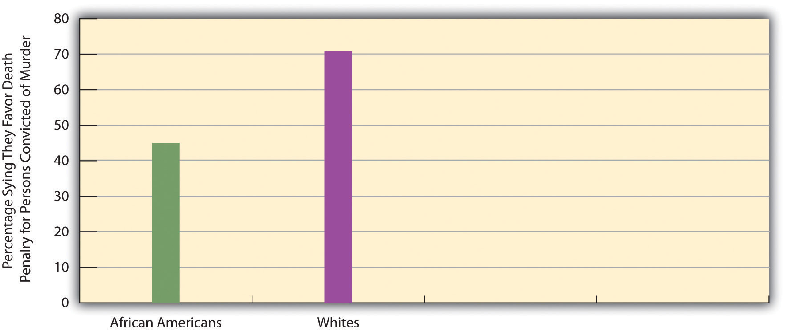

We now turn our attention from theoretical explanations of deviance and crime to certain aspects of crime and the people who commit it. What do we know about crime and criminals in the United States?
One thing we know is that the American public is very concerned about crime. In a 2009 Gallup Poll, about 55% said crime is an “extremely” or “very” serious problem in the United States, and in other national surveys, about one-third of Americans said they would be afraid to walk alone in their neighborhoods at night (Maguire & Pastore, 2009; Saad, 2008).Maguire, K., & Pastore, A. L. (2009). Sourcebook of criminal justice statistics. Retrieved from http://www.albany.edu/sourcebook; Saad, L. (2008). Perceptions of crime problem remain curiously negative. Retrieved from http://www.gallup.com/poll/102262/Perceptions-Crime-Problem-Remain-Curiously-Negative.aspx
Recall that according to the sociological perspective, our social backgrounds affect our attitudes, behavior, and life chances. Do gender and race affect our fear of crime? Figure 7.1 "Gender and Fear of Crime" shows that gender has quite a large effect. About 46% of women are afraid to walk alone at night, compared to only 17% of men. Because women are less likely than men to be victims of crime other than rape, their higher fear of crime reflects their heightened fear of rape and other types of sexual assault (Warr, 2000).Warr, M. (2000). Public perceptions of and reactions to crime. In J. F. Sheley (Ed.), Criminology: A contemporary handbook (3rd ed., pp. 13–31). Belmont, CA: Wadsworth.
Figure 7.1 Gender and Fear of Crime
Source: Data from General Social Survey, 2008.
Race also makes a difference. Figure 7.2 "Race and Fear of Crime" shows that African Americans are more afraid than whites of walking near their homes alone at night. This difference reflects the fact that African Americans are more likely than whites to live in large cities with high crime rates and to live in higher crime neighborhoods within these cities (Peterson & Krivo, 2009).Peterson, R. D., & Krivo, L. J. (2009). Segregated spatial locations, race-ethnic composition, and neighborhood violent crime. The ANNALS of the American Academy of Political and Social Science, 623, 93–107.
Figure 7.2 Race and Fear of Crime

Source: Data from General Social Survey, 2008.
Race also affects views about the criminal justice system. For example, African Americans are much less likely than whites to favor the death penalty (Figure 7.3 "Race and Support for the Death Penalty"), in part because they perceive that the death penalty and criminal justice system in general are racially discriminatory (Johnson, 2008).Johnson, D. (2008). Racial prejudice, perceived injustice, and the black–white gap in punitive attitudes. Journal of Criminal Justice, 36, 198–206.
Figure 7.3 Race and Support for the Death Penalty
Source: Data from General Social Survey, 2008.
It is surprisingly difficult to know how much crime occurs. Crime is not like the weather, when we all can see whether it is raining, snowing, or sunny. Usually when crime occurs, only the criminal and the victim, and sometimes an occasional witness, know about it. Although we have an incomplete picture of the crime problem, because of various data sources we still have a fairly good understanding of how much crime exists and of who is most likely to do it and be victimized by it.
The government’s primary source of crime data is the Uniform Crime Reports (UCR)The FBI’s regular compilation of crime statistics, most of them on Index Crimes., published annually by the Federal Bureau of Investigation. The FBI gathers its data from police departments around the country, who inform the FBI about crimes that have come to their attention. The police also tell the FBI whether someone is arrested for the crime and, if so, the person’s age, gender, and race. The FBI gathers all of these UCR data and reports them in an annual volume called Crime in the United States.
Most UCR data concern the so-called Part I OffensesThe FBI’s term for the major crimes included in the Uniform Crime Reports, including homicide, rape, robbery, aggravated assault, burglary, larceny, motor vehicle theft, and arson., eight felonies that the FBI considers the most serious. Four of these are violent crimes: homicide, rape, aggravated assault, and robbery; four are property crimes: burglary, larceny (e.g., shoplifting, pickpocketing, purse snatching), motor vehicle theft, and arson.
According to the FBI, in 2008 almost 1.4 million violent crimes and 9.8 million property crimes occurred, for a total of almost 11.2 million serious crimes, or 3,667 for every 100,000 Americans.Federal Bureau of Investigation. (2009). Crime in the United States, 2008. Washington, DC: Author. This is the nation’s official crime rate, and by any standard it is a lot of crime. However, this figure is in fact much lower than the actual crime rate because, according to surveys of random samples of crime victims, more than half of all crime victims do not report their crimes to the police, leaving the police unaware of the crimes. (Reasons for nonreporting include the belief that police will not be able to find the offender and fear of retaliation by the offender.) The true crime problem is therefore much greater than suggested by the UCR.
This underreporting of crime represents a major problem for the UCR’s validity. Several other problems exist (Lynch & Addington, 2007).Lynch, J. P., & Addington, L. A. (2007). Understanding crime statistics: Revisiting the divergence of the NCVS and the UCR. New York, NY: Cambridge University Press. First, the UCR omits crime by corporations and thus diverts attention away from their harm (see a little later in this chapter). Second, police practices affect the UCR. For example, the police do not record every report they hear from a citizen as a crime. Sometimes they have little time to do so, sometimes they do not believe the citizen, and sometimes they deliberately fail to record a crime to make it seem that they are doing a good job of preventing crime. If they do not record the report, the FBI does not count it as a crime. If the police start recording every report, the official crime rate will rise, even though the actual number of crimes has not changed. In a third problem, if crime victims become more likely to report their crimes to the police, which might have happened after the 911 emergency number became common, the official crime rate will again change, even if the actual number of crimes has not changed.
To get a more accurate picture of crime, the federal government began in the early 1970s to administer a survey, now called the National Crime Victimization Survey (NCVS)An annual survey conducted by the U.S. Department of Justice that asks a representative sample of the American public about crimes they have suffered., to tens of thousands of randomly selected U.S. households. People in the households are asked whether they or their residence has been the victim of several different types of crimes in the past half year. Their responses are then extrapolated to the entire U.S. population to yield fairly accurate estimates of the actual number of crimes occurring in the nation. Still, the NCVS’s estimates are not perfect. Among other problems, some respondents decline to tell NCVS interviewers about victimizations they have suffered, and the NCVS’s sample excludes some segments of the population, such as the homeless, whose victimizations therefore go uncounted.
Table 7.3 "Number of Crimes: Uniform Crime Reports and National Crime Victimization Survey, 2009" lists the number of violent and property crimes as reported by the UCR (see earlier) and estimated by the NCVS. Note that these two crime sources do not measure exactly the same crimes. For example, the NCVS excludes commercial crimes such as shoplifting, while the UCR includes them. The NCVS includes simple assaults (where someone receives only a minor injury), while the UCR excludes them. These differences notwithstanding, we can still see that the NCVS estimates about twice as many crimes as the UCR reports to us.
Table 7.3 Number of Crimes: Uniform Crime Reports and National Crime Victimization Survey, 2009
| Type of crime | UCR | NCVS |
|---|---|---|
| Violent crime | 1,318,398 | 4,343,450 |
| Property crime | 9,320,971 | 15,713,720 |
| Total | 10,639,369 | 20,057,170 |
Source: Data from Pastore, A. L., & Maguire, K. (2010). Sourcebook of criminal justice statistics. Retrieved from http://www.albany.edu/sourcebook.
A third source of crime information is the self-report surveyA survey given to individuals, usually adolescents, that asks them about offenses they have committed.. Here subjects, usually adolescents, are given an anonymous questionnaire and asked to indicate whether and how often they committed various offenses in a specific time period, usually the past year. They also answer questions about their family relationships, school performance, and other aspects of their backgrounds. Although these respondents do not always report every offense they committed, self-report studies yield valuable information about delinquency and explanations of crime. Like the NCVS, they underscore how much crime is committed that does not come to the attention of the police.
The three data sources just discussed give us a fairly good understanding of the types of crime, of who does them and who is victimized by them, and of why the crimes are committed. We have already looked at the “why” question when we reviewed the many theories of deviance. Let’s look now at the various types of crime and highlight some important things about them.
By conventional crimeViolent and property offenses, including homicide, rape, robbery, assault, burglary, larceny, and motor vehicle theft. we mean the violent and property offenses listed previously that worry average citizens more than any other type of crime. As Table 7.3 "Number of Crimes: Uniform Crime Reports and National Crime Victimization Survey, 2009" indicated, more than 20 million violent and property victimizations occurred in the United States in 2009. These offenses included some 15,240 murders; 126,000 rapes and sexual assaults; 534,000 robberies; and 823,000 aggravated assaults. Even more property crime occurs: 3.1 million burglaries, 11.8 million larcenies, and 736,000 motor vehicle thefts (Pastore & Maguire, 2010).Pastore, A. L., & Maguire, K. (2010). Sourcebook of criminal justice statistics. Retrieved from http://www.albany.edu/sourcebook The NCVS estimates that the crimes it measures cost their victims almost $20 billion each year in property losses, medical expenses, and time lost from work.
Generally, African Americans and other people of color are more likely than whites to be victims of conventional crime, poor people more likely than wealthy people, men more likely than women (excluding rape and sexual assault), and urban residents more likely than rural residents. To illustrate these differences, Figure 7.4 "Correlates of Violent Crime Victimization, 2008" presents some relevant comparisons for violent crime victimization.
Figure 7.4 Correlates of Violent Crime Victimization, 2008

Note: Income data are for 2007; rural and urban data are for 2005.
Source: Data from Maston, C. T., & Klaus, P. (2010). Criminal victimization in the United States, 2007—Statistical tables. Washington, DC: Bureau of Justice Statistics, U.S. Department of Justice; Rand, M. R. (2009). Criminal victimization, 2008. Washington, DC: Bureau of Justice Statistics, U.S. Department of Justice.
As this figure illustrates, violent crime is more common in urban areas than in rural areas. It varies geographically in at least one other respect, and that is among the regions of the United States. In general, violent crime is more common in the South and West than in the Midwest or Northeast. Figure 7.5 "U.S. Homicide Rates, 2008" depicts this variation for homicide rates. Louisiana has the highest homicide rate, 14.24 homicides per 100,000 residents, and New Hampshire has the lowest rate, 1.1 per 100,000 residents. Although homicide is thankfully a rare occurrence, it is much more common in Louisiana than in New Hampshire, and it is generally more common in the South and West than in other regions. Scholars attribute the South’s high rate of homicide and other violent crime to several factors, among them a subculture of violence, its history of slavery and racial violence, and its high levels of poverty (Lee, Bankston, Hayes, & Thomas, 2007).Lee, M. R., Bankston, W. B., Hayes, T. C., & Thomas, S. A. (2007). Revisiting the Southern subculture of violence. The Sociological Quarterly, 48, 253–275.
Figure 7.5 U.S. Homicide Rates, 2008

Source: Data from U.S. Census Bureau. (2010). Statistical abstract of the United States: 2010. Washington, DC: U.S. Government Printing Office. Retrieved from http://www.census.gov/compendia/statab.
When it comes to crime, we fear strangers much more than people we know, but NCVS data suggest our fear is somewhat misplaced (Truman & Rand, 2010).Truman, J. L., & Rand, M. R. (2010). Criminal victimization, 2009. Washington, DC: Bureau of Justice Statistics, U.S. Department of Justice. In cases of assault, rape, or robbery, the NCVS asks respondents whether they knew the offender. Strangers commit only about 42% of these offenses, meaning that 58% of the offenses, or well over half, are committed by someone the victim knows. There is also a gender difference in this area: 68% of women victims are attacked by someone they know (usually a man), compared to only 45% of male victims. Women have more to fear from men they know than from men they do not know.
Another important fact about conventional crime is that most of it is intraracial, meaning that the offender and victim are usually of the same race. For example, 84% of all single offender–single victim homicides in 2009 involved persons who were either both white or both African American (Federal Bureau of Investigation, 2010).Federal Bureau of Investigation. (2010). Crime in the United States, 2009. Washington, DC: Author.
Who is most likely to commit conventional crime? As noted earlier, males are more likely than females to commit it (see Figure 7.6 "Gender and Arrest, 2008") because of gender differences in socialization. Opportunity may also matter, as during adolescence boys have more freedom than girls to be outside the home and to get into trouble.
Figure 7.6 Gender and Arrest, 2008

Source: Data from Federal Bureau of Investigation. (2010). Crime in the United States, 2009. Washington, DC: Author.
Despite much controversy over what racial differences in arrest mean, African Americans have higher rates of arrest than whites for conventional crime. Criminologists generally agree that these rates indicate higher rates of offending (Walker, Spohn, & DeLone, 2007).Walker, S., Spohn, C., & DeLone, M. (2007). The color of justice: Race, ethnicity, and crime in America. Belmont, CA: Wadsworth. Although African Americans are about 13% of the U.S. population, they accounted for about 39% of all arrests for violent crime in 2009 and 30% of all arrests for property crime (Federal Bureau of Investigation, 2010).Federal Bureau of Investigation. (2010). Crime in the United States, 2009. Washington, DC: Author. Much of these higher crime rates stem from the fact that African Americans are much poorer than whites on average and much more likely to live in the large cities with high crime rates and in the neighborhoods in these cities with the highest crime rates (McNulty & Bellair, 2003).McNulty, T. L., & Bellair, P. E. (2003). Explaining racial and ethnic differences in serious adolescent violent behavior. Criminology, 41, 709–748. If whites lived under the same conditions, their crime rates would be much higher as well.
Social class also makes a difference in conventional crime rates. Most people arrested for conventional crime have low education and low incomes. Such class differences in arrest can be explained by several of the explanations of deviance already discussed, including strain theory. Note, however, that wealthier people commit most white-collar crimes. If the question is whether social class affects crime rates, the answer depends on what kind of crime we have in mind.
One final factor affecting conventional crime rates is age. The evidence is very clear that conventional crime is disproportionately committed by people 30 and under. For example, people in the 10–24 age group are about 22% of the U.S. population but account for about 45% of all arrests (Federal Bureau of Investigation, 2010).Federal Bureau of Investigation. (2010). Crime in the United States, 2009. Washington, DC: Author. During adolescence and young adulthood, peer influences are especially strong and “stakes in conventional activities,” to use some sociological jargon, are weak. Once we start working full time and get married, our stakes in society become stronger and our sense of responsibility grows. We soon realize that breaking the law might prove more costly than when we were 15.
White-collar crimeCrime committed in the course of one’s occupation. is crime committed as part of one’s occupation. It ranges from fraudulent repairs by auto repair shops to corruption in the high-finance industry to unsafe products and workplaces in some of our largest corporations. It also includes employee theft of objects and cash. Have you ever taken something without permission from a place where you worked? Whether or not you have, many people steal from their employees, and the National Retail Federation estimates that employee theft involves some $20 billion annually (National Retail Federation, 2007).National Retail Federation. (2007, June 11). Retail losses hit $41.6 billion last year, according to National Retail Security Survey [Press release]. Retrieved from http://www.nrf.com/modules.php?name=News&op=viewlive&sp_id=318 White-collar crime also includes health-care fraud, which is estimated to cost some $100 billion a year as, for example, physicians and other health-care providers bill Medicaid for exams and tests that were never done or were unnecessary (Rosoff, Pontell, & Tillman, 2010).Rosoff, S. M., Pontell, H. N., & Tillman, R. (2010). Profit without honor: White collar crime and the looting of America (5th ed.). Upper Saddle River, NJ: Prentice Hall. And it also involves tax evasion: the IRS estimates that tax evasion costs the government some $300 billion annually, a figure many times greater than the cost of all robberies and burglaries (Montgomery, 2007).Montgomery, L. (2007, April 16). Unpaid taxes tough to recover. The Washington Post, p. A1.

In June 2009, investment expert Bernard Madoff was sentenced to 150 years in prison for defrauding thousands of investors of tens of billions of dollars. This was the largest such crime in U.S. history.
Source: Photo courtesy of U.S. Department of Justice, http://commons.wikimedia.org/wiki/File:BernardMadoff.jpg.
One of the most serious recent examples of white-collar crime came to light in December 2008, when it was discovered that 70-year-old investment expert Bernard Madoff had engaged in a Ponzi scheme (in which new investments are used to provide the income for older investments) since the early 1990s in which he defrauded thousands of investors of an estimated $50 billion, the largest such scandal in U.S. history (Creswell & Thomas, 2009).Creswell, J., & Thomas, L., Jr. (2009, January 25). The talented Mr. Madoff. The New York Times, p. BU1. Madoff pleaded guilty in February 2009 to 11 felonies, including securities fraud and money laundering, and was sentenced to 150 years in prison (Henriques & Healy, 2009).Henriques, D. B., & Healy, J. (2009, March 13). Madoff goes to jail after guilty pleas. The New York Times, p. A1.
Some of the worst crime is committed by our major corporations (corporate crime). As just one example, price fixing in the corporate world costs the U.S. public about $60 billion a year (Simon, 2006).Simon, D. R. (2006). Elite deviance. Boston, MA: Allyn & Bacon. Even worse, an estimated 50,000 workers die each year from workplace-related illnesses and injuries that could have been prevented if companies had obeyed regulatory laws and followed known practices for safe workplaces (AFL-CIO, 2007).AFL-CIO. (2007). Death on the job: The toll of neglect. Washington, DC: AFL-CIO. A tragic example of this problem occurred in April 2010, when an explosion in a mining cave in West Virginia killed 29 miners. It was widely thought that a buildup of deadly gases had caused the explosion, and the company that owned the mine had been cited many times during the prior year for safety violations related to proper gas ventilation (Urbina, 2010).Urbina, I. (2010, April 10). No survivors found after West Virginia mine disaster. The New York Times, p. A1.
Corporations also make deadly products. In the 1930s the asbestos industry first realized their product was dangerous but hid the evidence of its danger, which was not discovered until 40 years later. In the meantime thousands of asbestos workers came down with deadly asbestos-related disease, and the public was exposed to asbestos that was routinely put into buildings until its danger came to light. It is estimated that more than 200,000 people will eventually die from asbestos (Lilienfeld, 1991).Lilienfeld, D. E. (1991). The silence: The asbestos industry and early occupational cancer research—a case study. American Journal of Public Health, 81, 791–800.
Asbestos is not the only unsafe product. The Consumer Product Safety Commission and the U.S. Centers for Disease Control and Prevention estimate that about 10,000 Americans die annually from dangerous products, including cars, drugs, and food (U.S. Consumer Product Safety Commission, 2003; Petersen & Drew, 2003).U.S. Consumer Product Safety Commission. (2003). Annual report to Congress, 2002. Washington, DC: Author; Petersen, M., & Drew, C. (2003, October 9). New safety rules fail to stop tainted meat. The New York Times, p. A1. In perhaps the most notorious case, Ford Motor Company marketed the Pinto even though company officials knew the gas tank could catch fire and explode when hit from the rear end at low speeds. Ford had determined it could fix each car’s defect for $11 but that doing so would cost it more money than the amount of lawsuits it would eventually pay to the families of dead and burned Pinto victims if it did not fix the defect. Because Ford decided not to fix the defect, many people—estimates range from two dozen up to 500—people died in Pinto accidents (Cullen, Maakestad, & Cavender, 2006).Cullen, F. T., Maakestad, W. J., & Cavender, G. (2006). Corporate crime under attack: The fight to criminalize business violence. Cincinnati, OH: Anderson. In a more recent example involving a motor vehicle company, Toyota was fined $16.4 million by the federal government in April 2010 for allegedly suppressing evidence that its vehicles were at risk for sudden acceleration. The government’s announcement asserted that Toyota “knowingly hid a dangerous defect for months from U.S. officials and did not take action to protect millions of drivers and their families” (Maynard, 2010, p. A1).Maynard, M. (2010, April 6). U.S. is seeking a fine of $16.4 million against Toyota. The New York Times, p. A1.
Corporations also damage the environment, as the BP oil spill that began in April 2010 reminds us. Because federal laws are lax or nonexistent, corporations can and do pollute the environment with little fear of serious consequences. According to one report, one-fifth of U.S. landfills and incinerators and one-half of wastewater treatment plants violate health regulations (Armstrong, 1999).Armstrong, D. (1999, November 16). U.S. lagging on prosecutions. The Boston Globe, p. A1. It is estimated that between 50,000 and 100,000 Americans and 300,000 Europeans die every year from the side effects (including heart disease, respiratory problems, and cancer) of air pollution (BBC News, 2005);BBC News. (2005, February 21). Air pollution causes early deaths. Retrieved from http://news.bbc.co.uk/2/hi/health/4283295.stm many of these deaths would not occur if corporations followed the law and otherwise did not engage in unnecessary pollution of the air, water, and land. Critics also assert that laws against pollution are relatively weak and that government enforcement of these laws is often lax.
Is white-collar crime worse than conventional crime? The evidence seems to say yes. A recent estimate put the number of deaths from white-collar crime annually at about 110,000, compared to “only” 16,000 to 17,000 from homicide. The financial cost of white-collar crime to the public was also estimated at about $565 billion annually, compared to about $18 billion from conventional crime (Barkan, 2012).Barkan, S. E. (2012). Criminology: A sociological understanding (5th ed.). Upper Saddle River, NJ: Prentice Hall. Although we worry about conventional crime much more than white-collar crime, the latter harms the public more in terms of death and financial costs.
Victimless crimeIllegal behavior in which people participate voluntarily, including drug use, prostitution, and gambling. is illegal behavior in which people willingly engage and in which there are no unwilling victims. The most common examples are drug use, prostitution, pornography, and gambling. Many observers say these crimes are not really victimless, even if people do engage in them voluntarily. For example, many drug users hurt themselves and members of their family from their addiction and the physical effects of taking drugs. Prostitutes put themselves at risk for sexually transmitted disease and abuse by pimps and customers. Illegal gamblers can lose huge sums of money. Although none of these crimes is truly victimless, the fact that the people involved in them are not unwilling victims makes victimless crime different from conventional crime.
Victimless crime raises controversial philosophical and sociological questions. The philosophical question is this: should people be allowed to engage in behavior that hurts themselves (Meier & Geis, 2007)?Meier, R. F., & Geis, G. (2007). Criminal justice and moral issues. New York, NY: Oxford University Press. For example, our society lets adults smoke cigarettes, even though tobacco use kills several hundred thousand people every year. We also let adults gamble legally in state lotteries, at casinos and racetracks, and in other ways. We obviously let people of all ages eat “fat food” such as hamburgers, candy bars, and ice cream. Few people would say we should prohibit these potentially harmful behaviors. Why, then, prohibit the behaviors we call victimless crime? Some scholars say that any attempt to decide which behaviors are so unsafe or immoral that they should be banned is bound to be arbitrary, and they call for these bans to be lifted. Others say that the state does indeed have a legitimate duty to ban behavior the public considers unsafe or immoral and that the present laws reflect public opinion on which behaviors should be banned.
The sociological question is just as difficult to resolve: do laws against victimless crimes do more harm than good (Meier & Geis, 2007)?Meier, R. F., & Geis, G. (2007). Criminal justice and moral issues. New York, NY: Oxford University Press. Some scholars say these laws in fact do much more harm than good, and they call for the laws to be abolished or at least reconsidered for several reasons: the laws are ineffective even though they cost billions of dollars to enforce, and they lead to police and political corruption and greater profits for organized crime. Laws against drugs further lead to extra violence, as youth gangs and other groups fight each other to corner the market for the distribution of drugs in various neighborhoods. The opponents of victimless crime laws commonly cite the example of Prohibition during the 1920s, where the banning of alcohol led to all of these problems, which in turn forced an end to Prohibition by the early 1930s. If victimless crimes were made legal, opponents add, the government could tax the behaviors now banned and collect billions of additional tax dollars.
Those in favor of laws against victimless crimes cite the danger these behaviors pose for the people engaging in them and for the larger society. If we made drugs legal, they say, even more people would use them, and even more death and illness would occur. Removing the bans against behaviors such as drug use and prostitution, these proponents add, would imply that these behaviors are acceptable in a civil society.
The debate over victimless crimes and victimless crime laws will not end soon, as both sides have several good points to make. One thing that is clear is that our current law enforcement approach is not working. More than 1 million people are arrested annually for drug use and trafficking and other victimless crimes, but there is little evidence that using the law in this manner has lowered people’s willingness to take part in victimless crime behavior (Meier & Geis, 2007).Meier, R. F., & Geis, G. (2007). Criminal justice and moral issues. New York, NY: Oxford University Press. Perhaps it is not too rash to say that a serious national debate needs to begin on the propriety of the laws against victimless crimes to determine what course of action makes the most sense for American society.
Crime and Punishment in Denmark and the Netherlands
As the text notes, since the 1970s the United States has used a get-tough approach to fight crime; a key dimension of this approach is mandatory sentencing and long prison terms and, as a result, a huge increase in the number of people in prison and jail. Many scholars say this approach has not reduced crime to a great degree and has cost hundreds of billions of dollars.
The experience of Denmark and the Netherlands suggests a different way of treating criminals and dealing with crime. Those nations, like most others in Western Europe, think prison makes most offenders worse and should be used only as a last resort for the most violent and most incorrigible offenders. They also recognize that incarceration is very expensive and much more costly than other ways of dealing with offenders. These concerns have led Denmark, the Netherlands, and other Western European nations to favor alternatives to imprisonment for the bulk of their offenders. These alternatives include the widespread use of probation, community service, and other kinds of community-based corrections. Studies indicate that these alternatives may be as effective as incarceration in reducing recidivism (repeat offending) and cost much less than incarceration. If so, an important lesson from Denmark, the Netherlands, and other nations in Western Europe is that it is possible to keep society safe from crime without using the costly get-tough approach that has been the hallmark of the U.S. criminal justice system since the 1970s. (Bijleveld & Smit, 2005; Dammer & Fairchild, 2006)Bijleveld, C. C. J. H., & Smit, P. R. (2005). Crime and punishment in the Netherlands, 1980–1999. Crime and Justice: A Review of Research, 33, 161–211; Dammer, H. R., & Fairchild, E. (2006). Comparative criminal justice systems. Belmont, CA: Wadsworth.